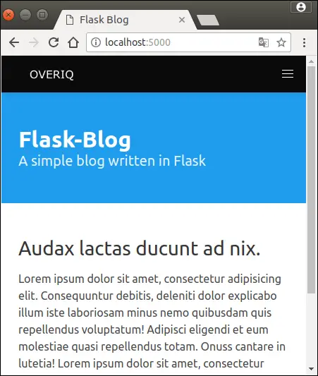
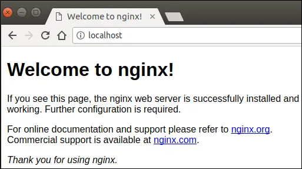
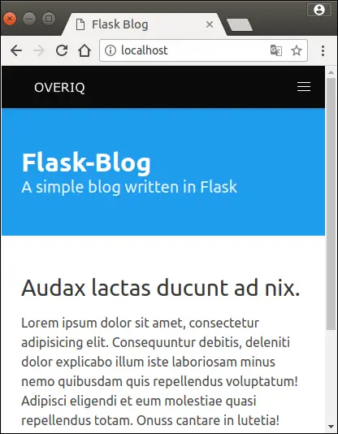
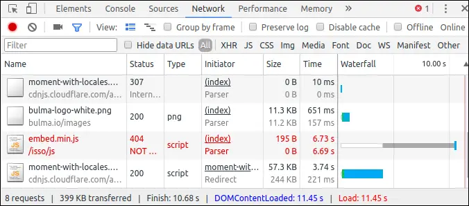
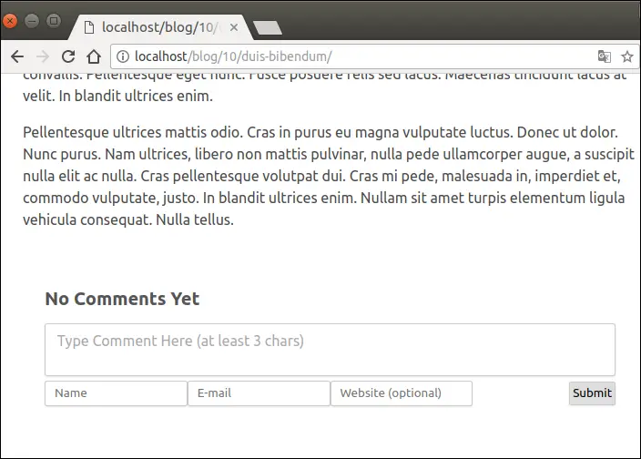
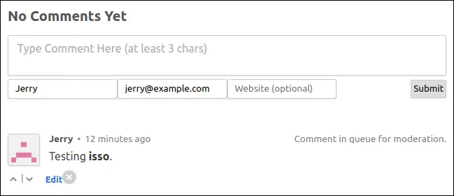
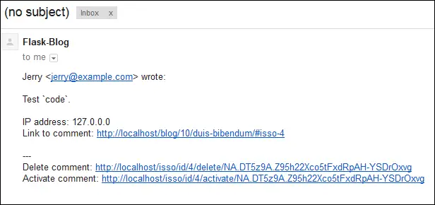

Installing Isso
Last updated on July 27, 2020
Isso is an open source alternative to Disqus. It is written in Python and allows users to enter comments in markdown. Unlike Disqus however, it is very lightweight and uses SQLite database store comments. Lately, Disqus has been criticized because of its privacy policies and bad site performance. If you are really concerned about these issues then isso might be a great alternative. This post describes how you can install isso on a blog written in Flask running on Ubuntu server though it can be adapted to any framework or server of your choice.
What you need? #
Before we begin you should have the following:
- Linux server because Isso doesn't work on Windows.
- A domain which points to your server (optional).
Let's get started.
Installing Isso #
First of all, we need Python. Most Linux distributions these days already come with Python installed by default. You can check the version of the Python on your machine using the following command:
$ python --version
If the preceding command gives an error then it means you don't have Python on your computer.
To install Python and other necessary dependencies on Debian based system like Ubuntu use the following command:
$ sudo apt-get install python3 python3-pip sqlite3 build-essential
Next, install virtualenv using the following command.
$ pip install virtualenv
The virtualenv package allows us to create a virtual environment. A virtual environment is simply a separate Python installation where we can install packages specific to our project without polluting the global Python installation. This way our projects can run different versions of the same package without conflicting with each other.
Creating Virtual Environment #
Create a new directory called flask_blog and change your current working directory to this directory using the cd command.
1 2 | $ mkdir flask-blog
$ cd flask-blog
|
To create virtualenv environment type the following command:
$ virtualenv env
This will create a directory named env inside the flask_blog. The env directory constitutes a separate Python installation.
To use this virtual environment, we have to activate it first. You can do so using the following command:
$ source env/bin/activate
Installing Blog #
In this post, we will be running Isso on a blog. You can download the project files from here or simply clone the repo using the following command.
$ git clone https://github.com/overiq/flask_project
Now you should have a directory named flask_project inside the parent flask_blog directory. Currently, your project structure should look like this:
1 2 3 4 5 6 7 8 9 10 11 12 13 | ├── env
└── flask_project
├── app.py
├── blog.db
├── README.md
├── requirements.txt
├── static
│ └── logo.png
└── templates
├── base.html
├── blog.html
├── index.html
└── single_post.html
|
Install the project dependencies using the following command:
$ pip install -r requirements.txt
To run the project type the following command:
$ gunicorn -w 2 -b 0.0.0.0:5000 app:app
We can move the process into the background by hitting Ctrl+Z followed by the bg command.
Your application is now up and running. To see it in action fire up your browser and navigate to http://localhost:5000. If you are following this guide on a live server replace the localhost with the IP address.

Although our project is running fine, but that's now how we will serve our project in production. In production, we will proxy requests through a more capable web server like Nginx. Let's do this!
Install Nginx using the following command:
$ sudo apt-get install nginx
Nginx will automatically start once the installation is finished. Visit http://localhost/ and you should see a page like this:

This means our Nginx is up and running. You can also test the status of Nginx using the following command:
$ sudo service nginx status
Now, let's configure Nginx to serve our application. In the /etc/nginx/sites-available directory create a new server configuration file flask_blog and add the following code to it:
$ sudo nano /etc/nginx/sites-available/flask_blog
/etc/nginx/sites-available/flask_blog
1 2 3 4 5 6 7 8 9 10 11 12 13 14 15 16 | server {
listen 80;
server_name localhost;
access_log off;
location / {
proxy_pass http://localhost:5000;
proxy_http_version 1.1;
proxy_set_header Upgrade $http_upgrade;
proxy_set_header Connection 'upgrade';
proxy_set_header Host $host;
proxy_cache_bypass $http_upgrade;
}
|
To activate this configuration simply create a symbolic link in the /etc/nginx/sites-enabled directory using the following command:
$ sudo ln -s /etc/nginx/sites-available/flask_blog /etc/nginx/sites-enabled
Restart the server for the changes to take effect.
$ sudo service nginx restart
Now visit http://localhost/ and you should be able to see the home page of our blog as follows:

Installing Isso #
Inside the virtualenv environment install isso using the following command:
$ pip install isso
Next, we have to set up some configurations options for isso. Create a new file named isso.cfg inside the flask_blog directory and add the following configurations to it.
flask_blog/isso.cfg
1 2 3 4 5 6 7 8 9 10 11 12 13 14 15 16 17 18 19 20 21 22 23 24 25 26 27 28 29 30 31 32 33 34 35 36 37 38 39 | [general]
; location of the database. isso will automatically create the database if not alrexy exists.
dbpath = ./comments.db
; Website where you want to host isso
host = localhost
; http = https://example.com
; you can add multiple hosts for local development
; or SSL connections. There is no wildcard to allow
; any domain.
notify = smtp
log-file = isso.log
[server]
listen = http://localhost:8001/
; configurations for spam protection
[guard]
enabled = true
ratelimit = 2
direct-reply = 10
reply-to-self = false
require-author = true
require-email = true
; notification configurations
[smtp]
username = infooveriq@gmail.com
password = password
host = smtp.googlemail.com
port = 587
security = starttls
to = infooveriq@gmail.com ;email where notfication will be sent
from = "Flask-Blog"<infooveriq@gmail.com>
timeout = 10
; comments will be moderated first before it is published
[moderation]
enabled = true
purge-after = 30d
|
The configurations options should be quite obvious. Anyway here is rundown of some important configurations we have used:
| Property | Description |
|---|---|
dbpath |
It refers to the location of the database where comments will be stored. |
host |
It refers to the website where you want to install Isso. |
listen |
It refers to the location of the Isso server. |
enabled (under guard section) |
it enables or disables basic spam protection. |
direct-reply |
It refers to the number of direct comments a thread can have. By default, Isso allows only 3 direct comments per thread. |
enabled (under moderation section) |
it enables or disables moderation queue. |
purge-after |
It refers to the number of days after which comments will be removed from the moderation queue. |
log-file |
Location of the log file. If specified Isso will log messages to the file instead of spitting them in the console. |
To display comments on the client, isso needs a single JS file. Open single_post.html and add modify the file as follows (changes are highlighted).
flask_blog/templates/single_post.html
1 2 3 4 5 6 7 8 9 10 11 12 13 14 15 16 17 18 19 20 21 22 23 24 25 26 27 28 29 30 31 32 33 34 35 36 37 38 39 40 41 42 43 44 45 46 | {% extends 'base.html' %}
{% block title %}
{% endblock %}
{% block main %}
<section class="section">
<div class="container">
<div class="columns">
<div class="column is-two-thirds">
<div class="content">
<h2><a href="">{{ post.title }}</a></h2>
<p>
<span class="icon has-text-info">
<i class="fa fa-calendar" aria-hidden="true"></i>
</span>
<span>{{ moment(post.created_on).format('Do MMM YYYY') }}</span>
</p>
<p>{{ post.content|safe }}</p>
<section class="section">
<div id="isso-thread"></div>
</section>
</div>
</div>
<div class="column">
<div class="content">
<h3>Nunquam prensionem victrix.</h3>
<p>
Cedriums sunt impositios de talis verpa. Nunquam pugna orexis. Nunquam pugna turpis.
Urbs prareres, tanquam mirabilis solitudo.The therapist absorbs. Mensa, torquis, et abactor. Heu. Elevatuss trabem!
</p>
</div>
</div>
</div>
</div>
</section>
<script data-isso="//{{ request.host }}/isso/"
data-isso-require-author="true"
data-isso-require-email="true"
src="//{{ request.host }}/isso/js/embed.min.js"></script>
{% endblock %}
|
If you now visit any blog post, it will trigger a request to /isso/js/embed.min.js/ URL.

As the output shows the request failed with 404 error this is because Isso is not currently running. Before we start the Isso server, we have to configure Nginx to proxy the request the request ending in /isso to the Isso server. Open server configuration file we created in the preceding section and modify it as follows (changes are highlighted):
/etc/nginx/site-available/flask_blog
1 2 3 4 5 6 7 8 9 10 11 12 13 14 15 16 17 18 19 20 21 22 23 24 | server {
listen 80;
server_name localhost;
access_log off;
location / {
proxy_pass http://localhost:5000;
proxy_http_version 1.1;
proxy_set_header Upgrade $http_upgrade;
proxy_set_header Connection 'upgrade';
proxy_set_header Host $host;
proxy_cache_bypass $http_upgrade;
}
location /isso {
proxy_set_header X-Forwarded-For $proxy_add_x_forwarded_for;
proxy_set_header X-Script-Name /isso;
proxy_set_header Host $host;
proxy_set_header X-Forwarded-Proto $scheme;
proxy_pass http://localhost:8001;
}
|
Restart the Nginx again.
$ sudo service nginx restart
Finally, start the isso server using the following command:
$ isso -c isso.cfg run
Again hit Ctrl+Z followed by bg command to move the process into the background.
Navigate to any post and you will be displayed a comment form like this:

Enter a comment and hit submit.

After every comment submission you will receive a notification via email like this:

The submitted comment will not be shown to the users until you activate the comment.
Importing Comments #
Isso also gives you the option to import your existing comments from Wordpress and Disqus. Once you have an XML dump you can use the following command to import your comments.
$ isso -c isso.cfg import xml_dump_of_comments.xml
Running Isso as Service #
The way we are running Isso is not recommended in production. If the Isso process stops for some reason, users will not be able to view and post comments and you would have to manually start Isso by logging into the server. A more robust way is to run Isso as a service. To accomplish this task we will use supervisor.
Install supervisor using the following command:
$ sudo apt-get install supervisor
Next, create a config file named isso.conf inside the /etc/supervisor/conf.d/ directory.
$ sudo nano /etc/supervisor/conf.d/isso.config
Add the following configurations to the file:
1 2 3 4 5 6 7 8 | [program:isso]
command = /home/overiq/flask/env/bin/isso -c /home/overiq/flask/isso.cfg run
user = x
autostart = true
autorestart = true
stdout_logfile = /home/overiq/flask/isso.log
redirect_stderr = true
environment = LANG=en_US.UTF-8,LC_ALL=en_US.UTF-8
|
You should replace the path names relative to your isso installation. To run the service enter the following commands:
1 2 3 4 5 6 | $ sudo supervisorctl reread && sudo supervisorctl update
isso: available
isso: added process group
$ sudo supervisorctl start isso
isso: started
|
That's all there is to it. If you have encountered any errors please let me know.
Load Comments